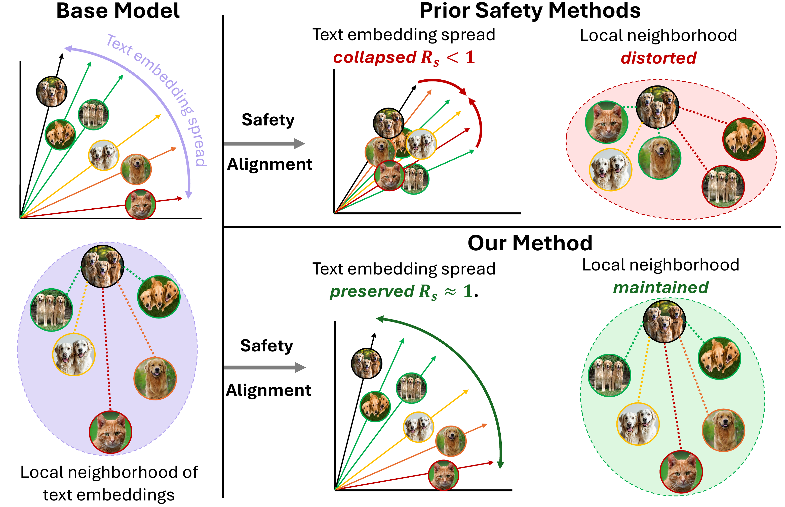
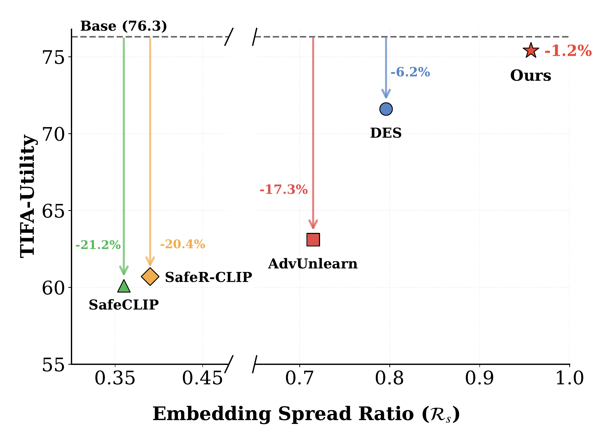

Safety alignment of text-to-image (T2I) diffusion models aims to suppress harmful generations while preserving utility on benign prompts. Recent methods often appear to deliver high safety with high utility, but this conclusion rests largely on coarse global utility metrics (e.g., FID, CLIPScore) that are insensitive to fine-grained semantic correctness, creating an illusion of high utility. We show that when utility is measured with structured evaluation, this illusion breaks: on TIFA (Text-to-Image Faithfulness evaluation with Question Answering), safety-aligned models suffer substantial drops in semantic fidelity, including failures in object counts, attributes, and relationships. To diagnose the source of this gap, we analyze the text-encoder prompt embedding space and uncover semantic collapse, a contraction of embedding spread coupled with distortion of inter-prompt similarity structure, which strongly correlates with structured utility loss. Guided by this insight, we propose Structure-Aware Geometric Regularization (SAGE), a safety alignment objective that explicitly preserves embedding spread and inter-prompt relational structure during adaptation. Our method restores structured utility (TIFA +5.0% over prior state-of-the-art) while maintaining strong safety performance and competitive coarse-grained utility scores.
SAGE targets the representation-level failure mode behind hidden utility loss. Existing text-encoder safety methods can keep each benign prompt close to its original embedding while still compressing the overall embedding space and reshuffling local neighborhoods. This semantic collapse weakens the model's ability to preserve counts, attributes, and relationships.
The method augments safety alignment with two geometry-aware regularizers: Embedding Spread Preservation keeps the benign prompt distribution from contracting relative to the base encoder, while Local Structure Alignment preserves pairwise similarity relationships among nearby prompts, including under unsafe-concept perturbations. The result is a safety objective that suppresses unsafe generations without erasing the fine-grained geometry needed for faithful prompt following.

Coarse metrics alone suggest that recent safety methods preserve utility, but TIFA exposes category-level failures in object, attribute, count, and relation fidelity. SAGE nearly recovers base-model structured utility while keeping safety competitive with the strongest alignment baselines.
Across the main results, SAGE reaches 75.4 TIFA, only 1.2% below the base model and 5.0% above DES, while maintaining low average ASR at 1.2%. It also preserves embedding geometry better than prior text-encoder methods, with a 0.96 spread ratio and 0.63 Jaccard neighborhood overlap.

Category-wise TIFA evaluation. Existing safety interventions degrade structural fidelity across multiple categories, while our method maintains strong performance (75.4 TIFA). Red highlights indicate the largest drop relative to the base model.
| Method | Obj. | Ani. | Loc. | Col. | Food | Mat. | Att. | Cnt. | Sha. | Act. | Spa. | TIFA Avg ↑ | CLIP ↑ | FID ↓ |
|---|---|---|---|---|---|---|---|---|---|---|---|---|---|---|
| Base (SD v1.4) | 78.9 | 82.8 | 89.8 | 79.9 | 84.1 | 83.7 | 79.6 | 63.6 | 58.0 | 68.2 | 52.9 | 76.3 | 26.5 | 17.23 |
| DES | 73.2 | 78.5 | 85.4 | 73.7 | 71.1 | 74.6 | 77.4 | 59.3 | 53.6 | 63.5 | 51.7 | 71.6 ↓6.2% | 25.5 | 16.23 |
| AdvUnlearn | 67.1 | 69.6 | 79.7 | 64.6 | 68.7 | 74.6 | 68.0 | 44.5 | 37.7 | 49.9 | 41.9 | 63.1 ↓17.3% | 23.9 | 20.67 |
| STEREO | 71.7 | 75.4 | 86.9 | 73.7 | 79.4 | 77.5 | 74.2 | 61.9 | 52.2 | 58.3 | 48.2 | 69.9 ↓8.4% | 24.6 | 21.69 |
| RECE | 78.4 | 80.5 | 88.0 | 79.9 | 80.2 | 85.7 | 77.6 | 61.1 | 66.7 | 65.6 | 50.9 | 74.8 ↓2.0% | 26.0 | 17.51 |
| MACE | 62.9 | 68.7 | 79.6 | 62.5 | 54.9 | 68.9 | 69.6 | 55.5 | 46.4 | 53.9 | 47.4 | 62.6 ↓18.0% | 23.8 | 24.87 |
| SafeCLIP | 59.0 | 67.4 | 79.1 | 69.5 | 58.1 | 75.2 | 71.4 | 56.6 | 50.0 | 46.6 | 40.5 | 60.1 ↓21.2% | 22.3 | 33.40 |
| SafeRCLIP | 58.6 | 66.1 | 78.2 | 69.1 | 58.5 | 74.6 | 71.6 | 55.9 | 50.7 | 46.1 | 43.7 | 60.7 ↓20.4% | 22.4 | 32.31 |
| SLD | 77.3 | 80.0 | 88.0 | 77.8 | 82.3 | 81.3 | 76.8 | 63.0 | 52.2 | 63.2 | 50.4 | 73.9 ↓3.1% | 25.5 | 21.85 |
| Ours | 77.6 | 80.8 | 88.3 | 79.6 | 83.5 | 83.7 | 80.1 | 61.1 | 58.0 | 66.3 | 53.8 | 75.4 ↓1.2% | 26.4 | 15.93 |
Comparison of Attack Success Rate (ASR) and CLIP Score across different methods. Lower ASR and higher CLIP scores indicate better safety and utility preservation, respectively.
| Method | MMA ↓ | Sneaky ↓ | I2P-S ↓ | Ring ↓ | P4D ↓ | Avg. ASR ↓ | CLIPScore ↑ |
|---|---|---|---|---|---|---|---|
| Base (SD v1.4) | 80.4 | 42.7 | 34.3 | 98.1 | 82.4 | 67.6 | 26.5 |
| DES | 0.2 | 0.8 | 1.2 | 2.8 | 0.0 | 1.0 | 25.5 |
| Adv-Unlearn | 0.3 | 0.8 | 1.1 | 0.0 | 0.0 | 0.4 | 23.9 |
| SafeCLIP | 25.2 | 17.7 | 24.0 | 65.4 | 57.7 | 38.1 | 22.3 |
| SafeRCLIP | 24.6 | 16.1 | 17.9 | 73.8 | 43.0 | 35.1 | 22.4 |
| STEREO | 2.2 | 3.2 | 1.1 | 2.8 | 3.3 | 2.5 | 24.6 |
| SLD | 74.3 | 31.5 | 20.8 | 98.1 | 74.3 | 59.8 | 25.5 |
| RECE | 36.1 | 6.5 | 6.0 | 15.9 | 26.1 | 18.1 | 26.0 |
| MACE | 8.6 | 2.4 | 6.3 | 9.4 | 10.3 | 7.4 | 23.8 |
| Ours | 0.4 | 0.8 | 1.2 | 2.8 | 1.0 | 1.2 | 26.4 |
Geometric properties of the text embedding space after safety alignment. Higher values indicate better preservation of embedding dispersion and local semantic neighborhoods.
| Method | Spread Ratio ↑ | Jaccard ↑ | CLIPScore ↑ | TIFA ↑ |
|---|---|---|---|---|
| DES | 0.80 | 0.52 | 25.5 | 71.6 |
| Adv-Unlearn | 0.71 | 0.50 | 23.9 | 63.1 |
| SafeRCLIP | 0.39 | 0.43 | 22.4 | 60.7 |
| SafeCLIP | 0.36 | 0.42 | 22.3 | 60.1 |
| Ours | 0.96 | 0.63 | 26.4 | 75.4 |
The paper shows that the standard story around safety-utility tradeoffs is incomplete: global scores like FID and CLIPScore can hide substantial fine-grained failures. By diagnosing those failures as semantic collapse in the text-encoder embedding space, SAGE gives safety alignment a more structural target: preserve embedding spread and local relationships while steering unsafe prompts away from harmful generations.
The resulting model maintains strong robustness against unsafe and adversarial prompts while restoring much of the structured utility that prior safety methods lose, suggesting that representation geometry is a practical lever for safer and more faithful text-to-image generation.
@inproceedings{yousaf2026illusion,
author = {Yousaf, Adeel and Ghosh, Soumik and Beetham, James and Bedi, Amrit Singh and Shah, Mubarak},
title = {The Illusion of High Utility in Safety Alignment of Text-to-Image Diffusion Models},
booktitle = {European Conference on Computer Vision (ECCV)},
year = {2026}
}